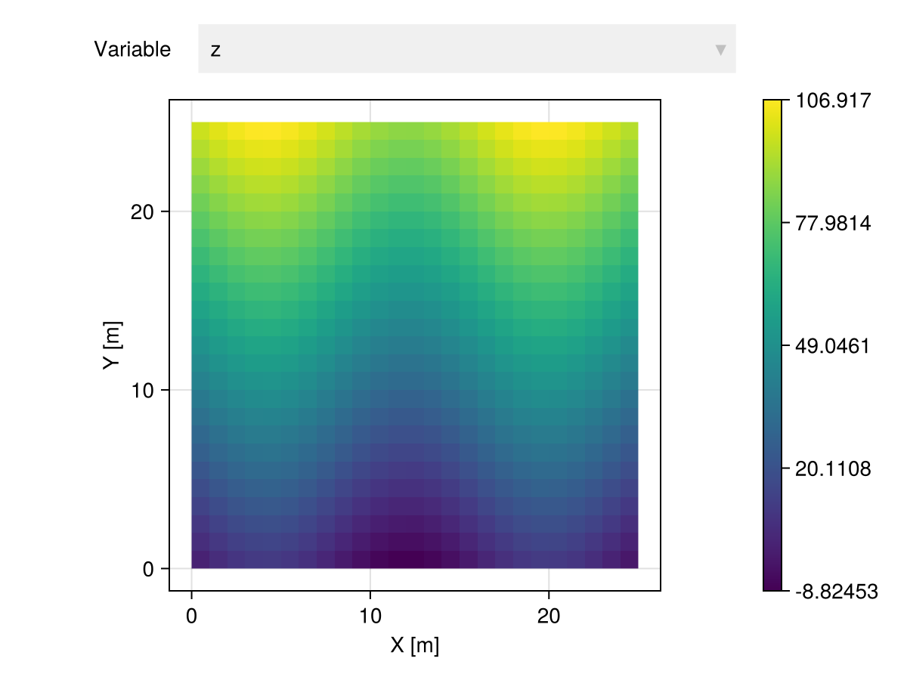
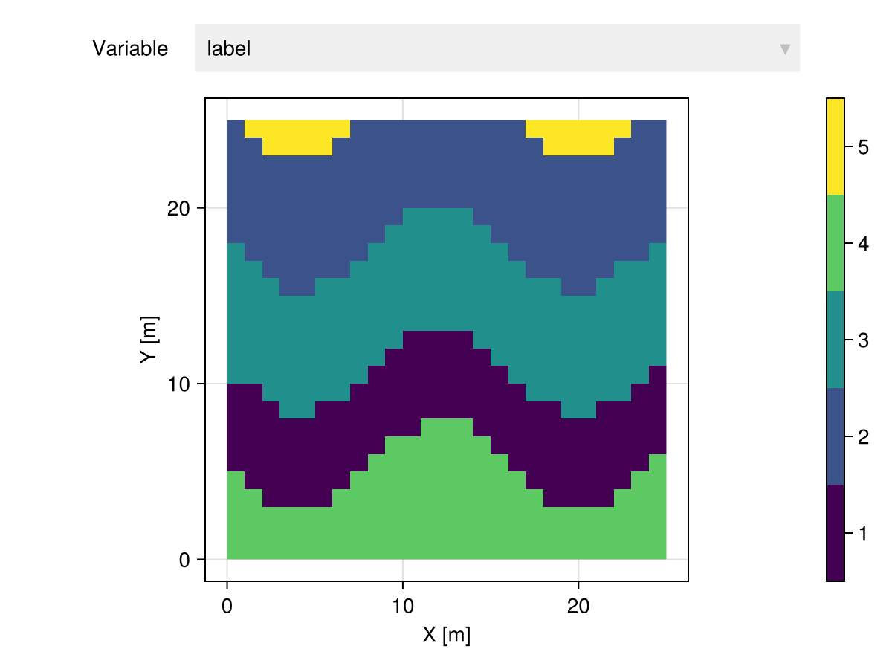
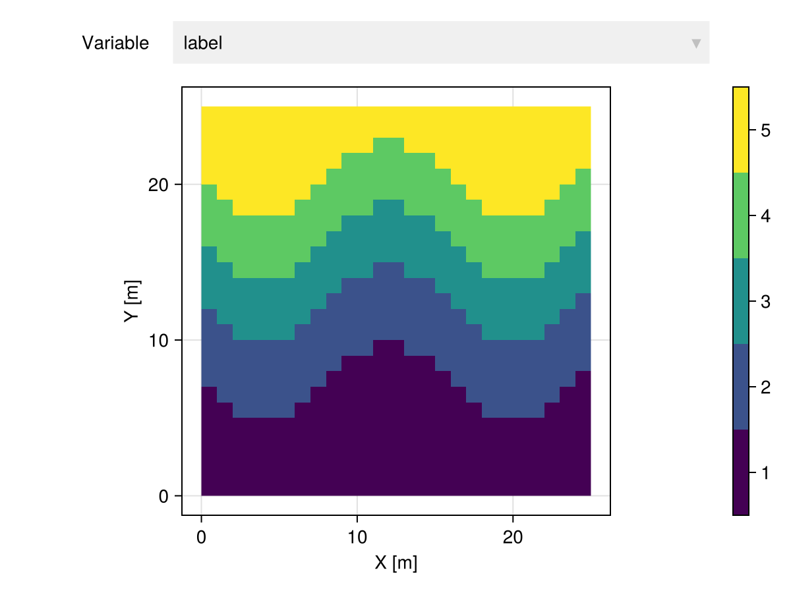
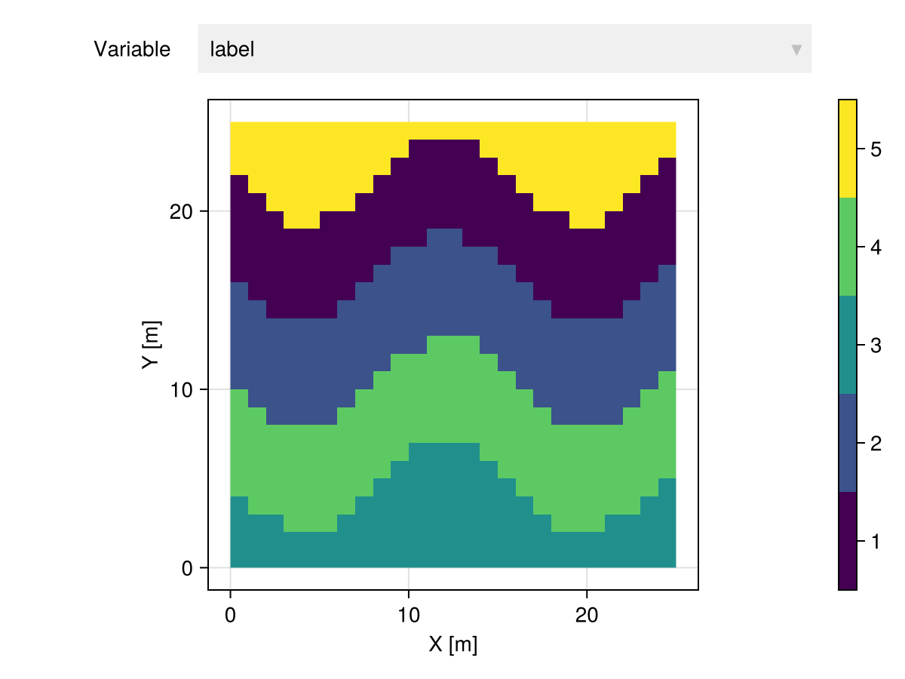
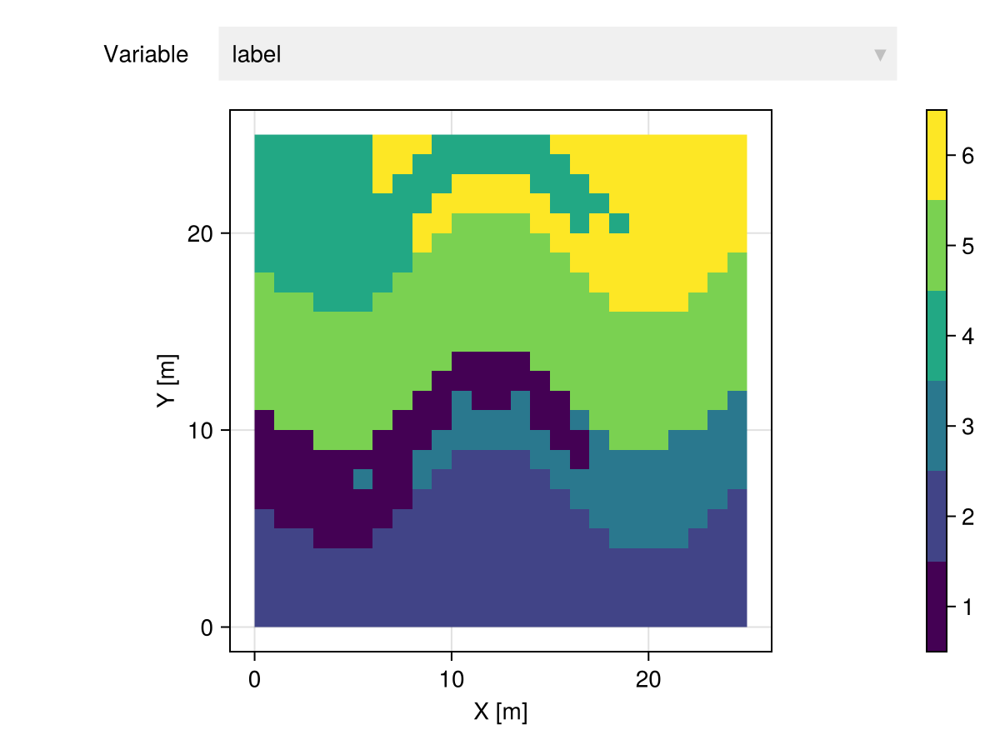

Clustering
Overview
We provide various geostatistical clustering methods to divide geospatial data into regions with homogeneous features. These methods can consider the values of the geotable (the classical approach), or both the values and the domain (the geostatistical approach).
Consider the following geotable for illustration purposes:
gtb = georef((z=[10sin(i/10) + j for i in 1:4:100, j in 1:4:100],))
gtb |> viewer
Classical
TableTransforms.KMedoids — Type
KMedoids(k; tol=1e-4, maxiter=10, weights=nothing, rng=Random.default_rng())Assign labels to rows of table using the k-medoids algorithm.
The iterative algorithm is interrupted if the relative change on the average distance to medoids is smaller than a tolerance tol or if the number of iterations exceeds the maximum number of iterations maxiter.
Optionally, specify a dictionary of weights for each column to affect the underlying table distance from TableDistances.jl, and a random number generator rng to obtain reproducible results.
Examples
KMedoids(3)
KMedoids(4, maxiter=20)
KMedoids(5, weights=Dict(:col1 => 1.0, :col2 => 2.0))References
Kaufman, L. & Rousseeuw, P. J. 1990. [Partitioning Around Medoids (Program PAM)] (https://onlinelibrary.wiley.com/doi/10.1002/9780470316801.ch2)
Kaufman, L. & Rousseeuw, P. J. 1991. [Finding Groups in Data: An Introduction to Cluster Analysis] (https://www.jstor.org/stable/2532178)
ctb = gtb |> KMedoids(5)
ctb |> viewer
Geostatistical
GeoStatsTransforms.GHC — Type
GHC(k, λ; nmax=2000, kern=:epanechnikov, link=:ward)Assign labels to rows of geotable using the Geostatistical Hierarchical Clustering (GHC) algorithm.
The approximate number of clusters k and the range λ of the kernel function determine the resulting number of clusters. The larger the range the more connected are nearby samples.
Unlike in other clustering algorithms, the argument k can be a list of integer values. In this case, each value is used to cut the underlying tree data structure into clusters.
Examples
GHC(5, 1.0) # request approximately 5 clusters
GHC([5,10,20], 1.0) # 5, 10 and 20 nested clustersOptions
nmax- Maximum number of observations to use in distance matrixkern- Kernel function (:uniform,:triangularor:epanechnikov)link- Linkage function (:single,:average,:complete,:wardor:ward_presquared)
References
- Fouedjio, F. 2016. [A hierarchical clustering method for multivariate geostatistical data] (https://www.sciencedirect.com/science/article/abs/pii/S2211675316300367)
Notes
The range parameter controls the sparsity pattern of the pairwise distances, which can greatly affect the computational performance of the GHC algorithm. We recommend choosing a range that is small enough to connect nearby samples. For example, clustering data over a 100x100 Cartesian grid with unit spacing is possible with λ=1.0 or λ=2.0 but the problem starts to become computationally unfeasible around λ=10.0 due to the density of points.
ctb = gtb |> GHC(5, 1.0)
ctb |> viewer
GeoStatsTransforms.GSC — Type
GSC(k, m; σ=1.0, tol=1e-4, maxiter=10, weights=nothing)Assign labels to rows of geotable using the Geostatistical Spectral Clustering (GSC) algorithm.
The number of clusters k and the multiplicative factor m for adjacent weights determine the resulting number of clusters.
Options
σ- Standard deviation for exponential model (default to1.0)tol- Tolerance of k-means algorithm (default to1e-4)maxiter- Maximum number of iterations (default to10)weights- Dictionary of weights for each variable (default tonothing)
Examples
GSC(3, 2.0) # default options
GSC(3, 2.0, tol=1e-2) # set toleranceReferences
- Romary et al. 2015. [Unsupervised classification of multivariate geostatistical data: Two algorithms] (https://www.sciencedirect.com/science/article/pii/S0098300415001314)
Notes
The algorithm implemented here is slightly different than the algorithm described in Romary et al. 2015. Instead of setting Wᵢⱼ = 0 when i <-/-> j, we simply magnify the weight by a multiplicative factor Wᵢⱼ *= m when i <–> j. This leads to dense matrices but also better results in practice.
ctb = gtb |> GSC(5, 2.0)
ctb |> viewer
GeoStatsTransforms.SLIC — Type
SLIC(k, m; tol=1e-4, maxiter=10, weights=nothing)Assign labels to rows of geotable using the Simple Linear Iterative Clustering (SLIC) algorithm.
The algorithm produces approximately k clusters by combining a geospatial distance dₛ and a distance between variables dᵥ. The tradeoff is controlled with a hyperparameter m in an additive model dₜ = √(dᵥ² + m²(dₛ/s)²) where s is the average spacing between cluster centroids.
Options
tol- Tolerance of k-means algorithm (default to1e-4)maxiter- Maximum number of iterations (default to10)weights- Dictionary with weights for each variable (default tonothing)
Examples
SLIC(10, 0.01) # default options
SLIC(10, 0.01, tol=1e-2) # set toleranceReferences
- Achanta et al. 2011. SLIC superpixels compared to state-of-the-art superpixel methods
Notes
The variables (or features) are standardized with the StdFeats transform prior to the core algorithm in order to facilitate the choice of the parameter m.
ctb = gtb |> SLIC(5, 0.01)
ctb |> viewer